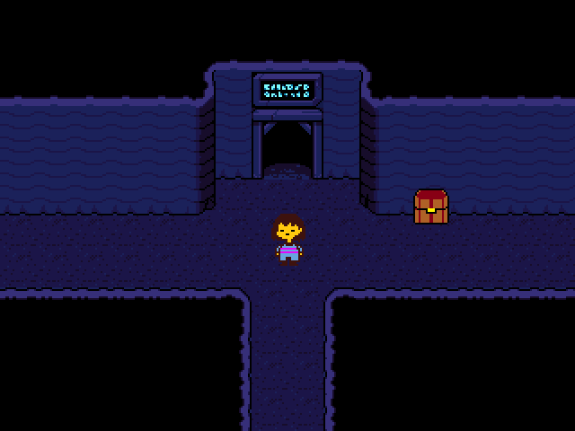

This will be a comprehensive guide to defeating Undyne the Undying, including strategies relating to leveling, equipment, using consumables, and dodging attacks.
Preface
As you're no doubt aware, Undyne the Undying is a pretty difficult boss.
She has fast and complicated attacks, which require a large amount of memorization and skill. There's no substitute for being good at the game, but 'git gud' and 'bash your head against the wall until you get it' aren't very helpful in terms of advice.
That's where this guide comes in.
This guide assumes you have played Undertale's True Pacifist route to completion, have started a Genocide/No Mercy route, and are looking for a comprehensive explanation/strategy guide for the fight with Undyne the Undying.
This guide limits spoilers for the remainder of the No Mercy route, but it does have a section related to speedrunning, found at the bottom of the page.
The following sub-sections will be organized by their relevence to the average player.
Equipment
Of all of the equipment available up to Undyne the Undying, four stand out among the rest:
Ballet Shoes (7 AT), found in the
Glowing Blue Marsh room
in Waterfall.
Old Tutu (10 DF), found in the
Falling Rocks room
near the beginning of Waterfall.
Torn Notebook (2 AT, 6 INV), sold by Gerson in
his Shop

for 55 G.
Cloudy Glasses (5 DF, 9 INV), sold by Gerson in his Shop for 30 G.
Note that once you fall into the dump, backtracking to get the Ballet Shoes and Old Tutu becomes impossible.
As you can see, the Ballet Shoes and Old Tutu provide better ATK and DEF, but the Torn Notebook and Glasses provide extra INV.
You may be wondering what these STATs do in practice. Well, I'll tell you!
The following assume an LV of 10. Note that Undyne the Undying has 23000 HP:
AT:
Ballet Shoes:
~1700 Damage for a perfect attack
~1500 Damage for a good attack
~1100 Damage for an okay attack
~600 Damage for a bad attack
I can't accurately guess how good you'll be with the Ballet Shoes, but by my guess, assuming you don't use any turns to heal, it'll probably take about ~18 turns (you'll see ~17 attacks). If you're good with the Ballet Shoes, you can expect to see about 15-16 attacks.
Torn Notebook:
~1400 Damage for a perfect attack
~1150 Damage for a good attack
~850 Damage for an okay attack
~600 Damage for a bad attack
Again, I can't be sure of your skill level, but I think it'll probably take about ~21 turns (you'll see ~20 attacks). If you're good with the Torn Notebook, you can expect to see 17-18 attacks.
DF:
Old Tutu:
8-12 Damage per hit, with an average of ~9.75 Damage (you'll die after taking ~5.75 hits).
Cloudy Glasses:
8-13 Damage per hit, with an average of ~10.5 Damage (you'll die after taking ~5.33 hits).
INV:
Your INV STAT determines how long you're invincible after being hit by an attack. Each point of INV is one frame that you're invincible.
As Undetale runs at thirty frames per second, each point of INV is 1/30th of a second of invincibility.
You normally have 30 INV, but against Undyne the Undying, you have one less INV per LV, meaning you'll probably have about ~20 INV.
Based on
their descriptions,
Torn Notebook: '* "Torn Notebook" - Weapon AT 2 * Contains illegible scrawls. * Increases INV by 6.'
Cloudy Glasses: '* "Cloudy Glasses" - Armor DF 6 * Glasses marred with wear. * Increases INV by 9.' '* (After you get hit by an attack, you stay invulnerable for longer)'
one might assume that the Torn Notebook and Glasses would give 6 and 9 INV respectively, but that's actually not the case. In reality, they give 15 and 30 INV respectively - a very potent buff that will save your, uh, grass.
Wearing both will give you 45 INV, which will over triple your INV STAT. The Glasses alone will still give you over twice the INV, so wearing them is still more than worth it even without the Torn Notebook.
Equipment Closing Thoughts
Having either the Torn Notebook or Cloudy Glasses adds loads of i-frames, and having both adds even more, so the extra INV is almost always worth it in some capacity.
With that said, the extra attacks you'll have to endure by using the Torn Notebook instead of the Ballet Shoes can get you killed, especially given how much harder the attacks start getting.
Since the Glasses add more INV anyway, if you're gonna use only one INV boosting item, it should probably be the Glasses.
As for the three remaining sets (Shoes + Tutu, Shoes + Glasses, Notebook + Glasses):
I would recommend using the Shoes and Glasses. The Ballet Shoes reduce the turn length of the battle by a lot, and the extra i-frames are a lifesaver.
If you don't get too much use out of the extra i-frames, getting hit by spaced out attacks, try using the Shoes and Tutu instead.
Alternatively, if you find yourself dying too quickly, getting hit by a bunch of attacks in a row, try using the Notebook and Glasses instead.
Consumables
Here's two lists of all of the relevant consumables, in order of HP gained, separated by whether or not you can backtrack to get them:
Items you can backtrack to get:
Astronaut Food: Heals 21 HP, can only be obtained twice, from the cooler in the dump.
Crab Apples: Heals 18 HP, from Gerson's Shop for 25 G.
Sea Tea: Heals 10 HP, increases SPEED (movement speed in Red SOUL Mode), from Gerson's Shop for 18 G.
Items you can't backtrack to get:
Pie: Heals MAX HP, can only be obtained once, from
Toriel's home.
Snowman Pieces: Heals 45 HP, can only be obtained thrice, from
the Snowman partly through Snowdin Forest.
Abandoned Quiche: Heals 34 HP, can only be obtained once, from a
hidden room off of the Bridge Seeds puzzle.
Spider Cider: Heals 24 HP, from the Spider Bakesale in the Ruins for 18 G.
Cinnamon Bunnies: Heals 22 HP, stolen from Snowdin Shop.
Dog Salad:
Heals 2/10/30/MAX HP
Assuming a MAX Heal is ~50 HP, the average HP gained from using Dog Salad is ~23 HP.
at random, occasionally obtained by using
Dog Residue.
Dog Residue is found by completing the Piano Puzzle partly through Waterfall.
Which of these are the most useful, you ask?
Well, before we talk about that, let's first discuss the Pie and Snowman Pieces.
As you've probably guessed, Undyne the Undying is not the last super difficult fight in the No Mercy route.
Without getting into spoiler-ey specifics: Do not use the Pie. Its MAX HP heal is too good to 'waste' on Undyne.
As for the Snowman Pieces: If using the Snowman Pieces is what allows you to defeat Undyne the Undying, use them. It is better to progress than to vainly attempt to save every last bit of HP for later fights. With that said, it's better to avoid using them if you can.
Aside from those, what is the best 'loadout'?
Well, just fill up your inventory with the most powerful healing items you can get your hands on (listed above). Obviously, leave the Pie (and Snowman Pieces if you're saving them) in the box.
Leave at most 1-2 slots open for Sea Tea, if you're gonna use it. As for whether or not you should? It's up to personal preference, but I would recommend taking only one: it helps, but two offers diminishing returns.
As for Dog Salad, the possibility of an extra bit of HP isn't worth the added RNG, IMO, but it's definitely not an invalid (or even sub-optimal) strategy, especially if you're gonna replace Crab Apples with it. The real issue is how tedious it is to get...
Dodging Attacks
This is the part of the guide where you get a visual explanation.
Here's all of Undyne's attacks done without getting hit!
For these upcoming descriptions, 'arrows' refers to Green SOUL mode attacks, and 'spears' refers to Red SOUL mode attacks.
The small arrows (↑→↓←↑→↓←) indicate which direction you should face for the attack (not the way the arrows face).
This attack is a variation of Undyne's normal starting attack in other routes of the game. It's extended to feature a few partial circle motions.
The pattern is:
↑ ↑ ↑ → ↓ ← ↑ ← ↓ → ↓ ← ↑
This is another simple attack. You only need to block left and right.
The pattern is:
⇐ → ⇐ ⇐ → → ⇐ → → ⇐ → ⇐ → ⇐
This attack is random, but note that each arrow occupies a 'slot'.
Use this knowledge to give yourself an idea of when you'll need to switch directions.
This attack is random, and based entirely on experience and skill. And luck.
My only real advice is to not be afraid to make some risky maneuvers.
This attack is comprised of three columns. Spears will come out of the bottom, then shoot towards the top, one column at a time.
Stay in a single column until a spear appears below you, then move over to an empty column; note that the spears do not deal damage while disappearing.
This attack has a slightly difficult, but rewarding cheese strategy, shown below in attack #18.
This is another mostly simple arrow attack, but it tries to fake you out by suddenly sending faster arrows out from the left and right.
The pattern is:
← ↑ → ↓ ← → ← ↑ ↓
This is a super fast arrow attack. Multiple arrows will come from the top, followed by one from either the left or right.
The pattern is:
↑ ↑ ↑ ↑ ← ↑ ↑ ↑ ↑ → ↑ ↑ ↑ ← ↑ ↑ ↑ → ↑ ↑ ↑
This attack is comprised of a set of alternating arrows coming from the left and the top that suddenly switch to being yellow arrows.
The pattern is:
← ↑ ← ↑ ← ↑ ← ↑→ ↓ → ↓ → ↓
Yes, these two attacks are completely identical, and not random.
In this attack, spears appear in circles of six, and start spinning towards you.
I recommend finding a movement pattern that works, and then sticking with it - the strategy that I use everytime is shown above.
This attack is comprised of arrows making circle motions, followed by a broken circle motion.
The first and last circles are comprised of yellow arrows.
The pattern is:
← ↓ → ↑↑ ← ↓ →↑ → ← ↓
A mostly simple attack that requires you block left then right, followed by up or down.
The pattern is:
← → ↑↑← → ↓↓← → ↑↑← → ↓↓
Another mostly simple attack that requires you to block in one direction, followed by the opposite direction.
The pattern is:
←→↓↑→←↑↓←→↓↑→←
This is the last Green SOUL modeattack. It's basically the same as the last appearance of this attack.
In this attack, spears appear in circles of six, then shoot towards you.
Note that the spears can't damage you after they converge, and how the spears aren't spinning.
My advice is to keep moving, finding gaps in the spear circles. Don't be afraid to hug the walls or cut it close.
A harder version of the Spinning Spear Circle attack that has 8 spears rather than 6.
This is Undyne the Undying's hardest attack in my opinion. I barely managed to get footage of not getting hit by it.
A good strategy is to stay mostly still, and look for openings. Once you've found one, go for it, making sure to account for the spinning of the spears (remember that the spears' spinning slows down as they closer to you).
You could try to make a consistant strategy like the last version of this attack, but that's made difficult due to how long it takes to show up; personally, I end up just winging it.
This attack is the same as the one from earlier, except much faster due to the progression of the fight. My advice is the same as last time.
Like the last attack, this attack is a retread of earlier, but faster.
This time, I show this attack's cheese strategy: by moving to the (almost) pixel-perfect spot shown, you won't even need to dodge.
This is made easier by holding the 'back' button (X by default): it slows down your movement, making it easier to get into just the right position.
I would recommend trying to dodge the attack normally if you're not used to dodging the attack this way, though. It's better to expend a bit more effort dodging than trying and failing to do a cheese strat.
From here on out, Undyne reuses her attacks in this order:
Simple Spear Circle; Spinning Spear Circle 2; Random Spears; Spear Columns; Repeat.
Level (of Violence)
If you progress normally through the No Mercy route, your LV will usually about 10. If you go out of your way to kill enemies with high EXP rewards, you may get up to LV 12, or if you do the opposite, as low as LV 9.
So, what do these differences do?
Well, LV determines your base HP, AT, and DF. At LV 1, you have:
20 HP, with an extra 4 HP
per LVLV 1: 20 HP LV 2: 24 HP . . . LV 9: 52 AT LV 10: 56 AT LV 11: 60 AT . . . LV 19: 92 HP LV 20: 99 HP
(LV 20 breaks the pattern)
10 AT, with an extra 2 AT
per LVLV 1: 10 AT LV 2: 12 AT . . . LV 9: 26 AT LV 10: 28 AT LV 11: 30 AT . . . LV 19: 46 AT LV 20: 48 AT
(Entering battle at LV 20 sets your ATK to 30, though this isn't possible to see in-game)
10 DF, with an extra 1 DF
per 4 LVs
LV1-4: 10 DF LV5-8: 11 DF LV9-12: 12 DF LV13-16: 13 DF LV17-20: 14 DF
(Entering battle at LV 20 sets your DEF to 30, though this isn't possible to see in-game)
You may notice, however, that if you go into your STATs menu, it will look something like this:
The numbers on the left are your baseSTATs (the numbers I gave in the above paragraph), while the numbers on the right are your equipmentSTATs.
To find your "true" STATs, add them together, then add 10.
Why add 10?
Because the STATs menu lies to you.
No, really: it says your base AT and DF are 10 lower than they should be, making it seem like you start at 0 AT and 0 DF. Why it does this, I do not know.
Anyway, the actual base attack and defense for this example are 28 AT and 12 DF. Accounting for equipment STATs, the AT is 35, and the DF is 22.
Obviously, the higher your LV, the higher your HP, AT, and DF, and the easier the fight will be.
Playing up to Undyne the Undying
If you're really struggling against Undyne the Undying, you might (keyword: MIGHT) want to Reset entirely, in order to get the best items possible.
If you really do want to get the biggest edge possible, Reset, and play from the beginning of the game:
Buy as much Spider Cider as possible with the GOLD you have. You can buy some even after killing Toriel.
If you encounter Loox, try picking on him for some
extra EXP.
Killing Loox gives an extra 5 EXP each time you've picked on him, up to an extra 15 EXP.
Make sure to get the Pie by going to sleep once you enter Toriel's home.
Once you get to Snowdin, put all the Spider Cider and Pie in the box.
Just before Papyrus' Invisible Electricity Maze, go up from the Frozen Lake room to get the three Snowman Pieces.
In Snowdin Town, steal as many Cinnamon Bunnies as you need for Undyne the Undying.
Aside from the Quiche, you'll have 7 inventory slots for healing against her; you should have a combined total of 7 jugs of Spider Cider and Cinnamon Bunnies in your box.
Once you get to Waterfall, go behind the upper waterfall in the Falling Rocks room to get the Old Tutu.
Afterwards, in the large Bridge Seed Puzzle room, build a bridge to the right to get the Abandoned Quiche.
Once you enter the Glowing Blue Marsh area after the telescope room, go to the left to find the Ballet Shoes.
Once you've exhausted Waterfall's Kill Count (18), do some inventory management in front of and in Gerson's Shop.
In the box, you should have the Pie, Snowman Pieces, and whatever equipment you're not using.
You should buy the Torn Notebook and Glasses even if you're not using them; they're helpful later in the run, after Undyne the Undying.
In your inventory, you should have the Quiche, and 7 jugs of Spider Cider/Cinnamon Bunnies. Fill any empty slots with Astronaut Food/Crab Apples.
Replace 1 or 2 of your least powerful healing items with some Sea Tea, if you're using it.
At this point, you should be as prepared as possible for Undyne the Undying. Note that if you want to change equipment, the last box you can find is the one in front of Gerson's Shop.
Let's say you've already beaten Undyne the Undying, and are looking to speedrun Undertale.
Given that you're just starting out, you'll probably be running either the Neutral Glitchless or Genocide categories of the game. In that case, you'll not only have to fight Undyne the Undying, but you'll also have to get good at it.
As you may already be aware, if you're being optimal, you'll have the Ballet Shoes and Bandage while fighting Undyne the Undying, and you'll be at LV 10.
To get an optimal fight, you'll need to do 2 things:
Deal as much damage as you can to kill Undyne the Undying as fast as possible: a 14-turn fight is optimal, and in doing so you'll skip having to sit through her last few attacks. If you miss it, you'll see the Random Arrows attack, which is unfortunate, but perfectly acceptable unless you're trying to squeeze every last inch out of the fight. The Simple Spear Circle attack right after however, is very lengthy - try to avoid seeing this attack if at all possible.
Not get hit while in the Green SOUL mode: Internally, Undyne has a 'Challenge' statistic, which keeps track of how fast the arrows are in the Green SOUL mode. Getting hit lowers the challenge level, slows the arrows down, and makes all of her Green SOUL mode attacks take longer.
Outside of the fight itself:
You can SAVE in the hallway with Echo Flowers just before the bridge room if you're not super confident. Even if you don't SAVE, taking the safety heal might be a good idea anyway.
When you enter the bridge room, make sure to move down a pixel to avoid getting stuck on the bridge! (I'm getting angry just thinking about that stupid bridge...)
You can mash the attack indicators to hit Monster Kid - the accuracy doesn't matter.
All of Monster Kid and Undyne's pre-fight dialogue is mashable, but not the dialogue when Undyne first transforms, nor the dialogue when you deal the final hit, so don't bother mashing through it.
If you need some safety for the fight:
You can get the Snowman Pieces in Snowdin. If you get these, grind for an extra encounter before and after going into the Snowman room.
You can get the Old Tutu at the beginning of Waterfall. If you get it, you won't be able to run away from encouters as easily, most notably Vulkin and Tsundereplane later in Neutral Glitchless, or extra enemies in the CORE in Genocide.
If you're looking for an intermediate safety strat, try buying the Glasses and a couple of Crab Apples from Gerson. If you buy these, note that the Glasses also make fleeing harder, but not as hard as with the Tutu. They'll also help later with some extra defense and INV.
Oh, and one more thing:
If you use a healing item in battle, when the enemy finishes their attack, the curser will still be on the ITEM option. If you're used to quickly pressing Z and Enter to attack, the you'll end up selecting and using the first item in your inventory.
At best, you'll waste the Pie/Instant Noodles (and a turn), and at worst, you'll eat the Spider Donut in Neutral Glitchless.
Do not eat the Spider Donut in Neutral Glitchless.
Doing so will force you to kill Muffet and watch her ~20 second long death animation.
And that concludes this overly long and comprehensive guide to defeating Undyne the Undying. I hope this guide will help you with fighting Undyne the Undying, and I also hope that it wasn't too long or incomprehensible. Thanks for reading (and bearing with me)!
 in Waterfall.
in Waterfall.
 near the beginning of Waterfall.
near the beginning of Waterfall.